Client's Testimonials
“It is a great piece of equipment, useful for the doctors and patients. Congratulations!!”
“A very useful model of remote monitoring and post-operative care.”
“Very useful for Urban and Rural area.”
“Very useful medical device. As early as possible device should be launched and used in Medical institutes.”
“It is a great piece of equipment, useful for the doctors and patients. Congratulations!!”
“A very useful model of remote monitoring and post-operative care.”
“Very useful for Urban and Rural area.”
“Very useful medical device. As early as possible device should be launched and used in Medical institutes.”
Leverage technology to reduce the patient–doctor geographic distance with a proactive and predictive screening system.
Simplifying Remote Patient Monitoring And
Early Detection with proRITHM
At proRITHM, we are transforming patient care with our groundbreaking technology. Our advanced RPM (Remote Patient Monitoring) platform, equipped with cutting-edge proRITHM devices, continuously tracks essential health metrics in real-time. This ensures improved health outcomes and provides peace of mind for both patients and healthcare providers.
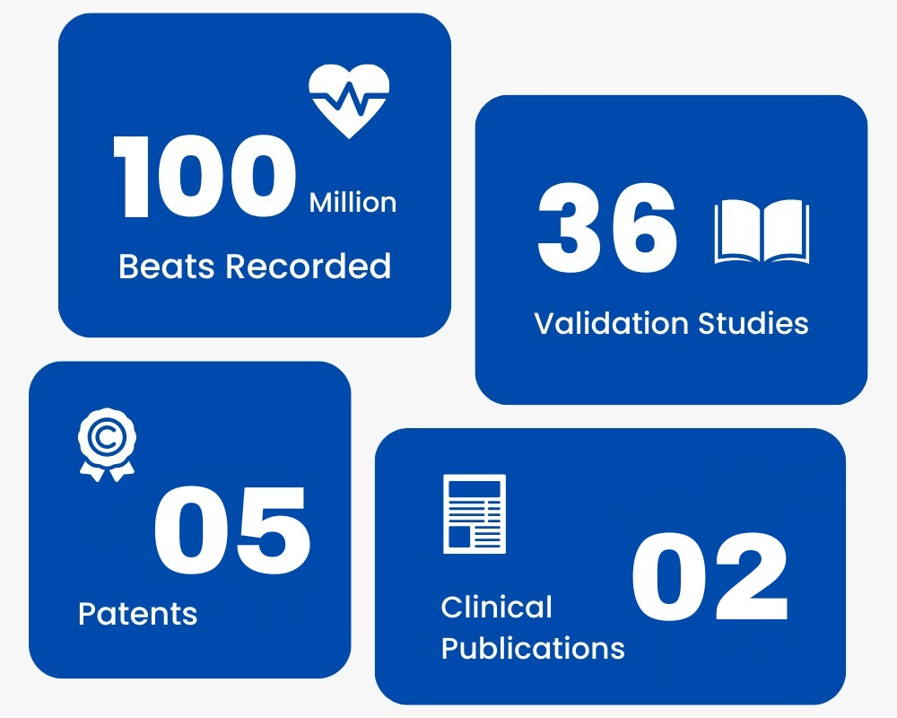
Introducing the Award-Winning proRITHM Wearable Device and IR
Platform for Continuous Remote Patient Monitoring
Enhancing personalized patient care, optimizing clinical workflows, and empowering proactive clinical interventions
remote data collecting
health monitoring
personalised notification and more
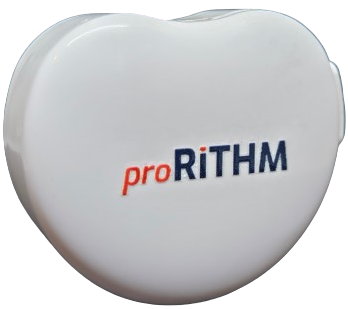
data transmission
changeable 24hrs adhesive
device
Explore Remote
Monitoring Solutions!
The proRithm IR platform features RPM proRITHM devices designed to monitor Heart Rate, Cuffless Blood Pressure, Skin Temperature, Respiratory Rate, Oxygen Saturation, and Heart Rate Variability. With ongoing additions of new devices and integrations, its capabilities continue to expand, enhancing patient care even further.
Continuous proRITHM monitoring throughout care settings
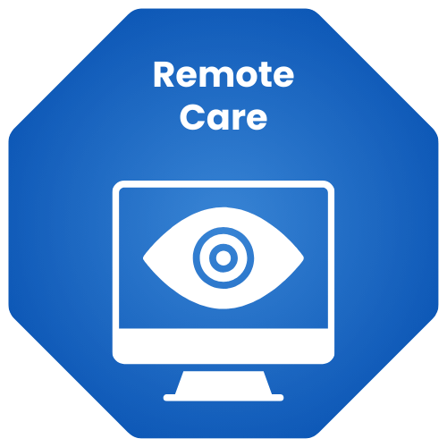
Enhancing Patient Care
proRITHM empowers healthcare providers with the tools they need to deliver superior care. By leveraging real-time data and advanced analytics, our platform helps in:
Convenience And Comfort
Monitor your health from the comfort of your home, reducing the need for frequent visits to the doctor.
Tailored Alerts for Vital Sign Monitoring at Every Level
proRITHM alerts healthcare providers when vital signs deviate from predetermined parameters, enabling timely action and mitigating the risk of complications.
Improve Outcomes
Make informed decisions that lead to better health outcomes.
Early Detection
Identify potential health issues before they become serious.
Patient Engagement
Enhanced patient engagement and adherence to treatment plans.
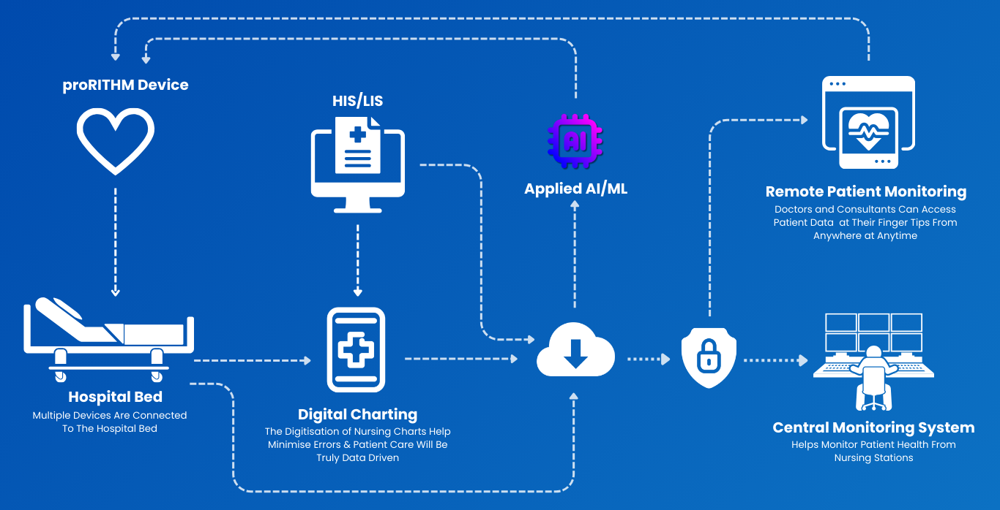
Benefits for Hospitals, Home Care and Ambulance
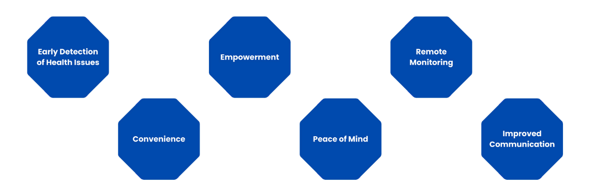
A Detailed and High-Resolution Overview of an Individual's Health Status
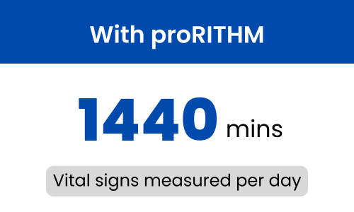
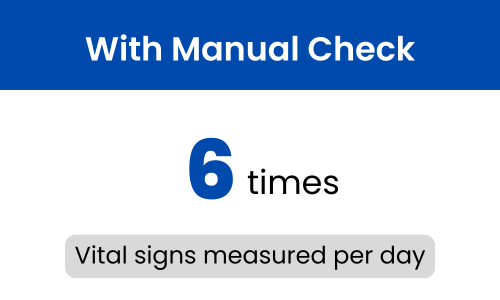
Present Parameters
Respiratory Rate
Heart Rate VariabilityUpcoming Parameters
Body Posture
Resting Heart Rate
Hemoglobin
Non-Invasive Blood Glucose
Activity Tracking
Activity Level
Step Cadence
Step Strength
Step Symmetry
Sleep Analysis
Incline Angle While SleepingDiscover More With proRITHM
Ready to learn more? Contact us today to see how proRITHM can enhance your healthcare experience. We invite you to explore the full potential of proRITHM. Learn more about our advanced features, latest device updates, and how our platform can enhance your healthcare experience.
GLOBAL STANDARDS AND PRACTICES
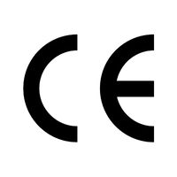

Building a Stronger Future in Partnership
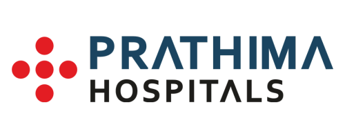
FAQs About proRITHM
With Our Strategic Partners,
We Propel the Healthcare Revolution Forward
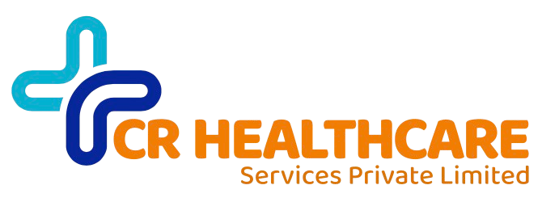
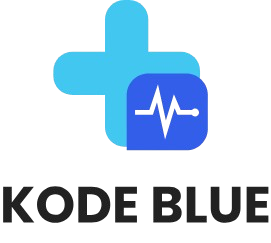
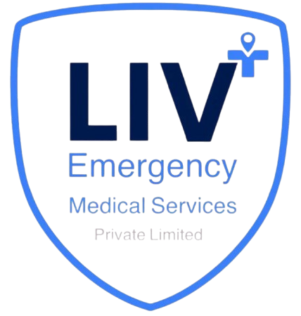
Schedule A Demo
Join the future of healthcare with proRITHM. Experience the peace of mind that comes with knowing your health is being monitored by the best in the industry.
Let's Connect